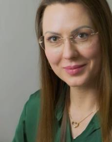

A sua história
vem primeiro.
Antes de qualquer plano, existe uma pessoa. Entender sua rotina e suas necessidades é parte essencial do cuidado.
Nutrição clínica baseada em ciência
Nutrição eficiente começa quando a ciência encontra a sua história — com escuta, estratégia e respeito ao que faz sentido para você.

Sou nutricionista, PhD e professora na Universidade do Algarve. Acredito em uma nutrição que olha para além do prato: considera a sua história, o seu contexto e a complexidade de cada pessoa.
Meu trabalho une conhecimento científico e cuidado individualizado para construir caminhos possíveis, consistentes e feitos para a vida real.
Acompanhe no Instagram ↗Sem atalhos milagrosos.
Com método, presença e propósito.
Antes de qualquer plano, existe uma pessoa. Entender sua rotina e suas necessidades é parte essencial do cuidado.
Conhecimento científico traduzido com clareza e aplicado à realidade de cada acompanhamento.
Estratégias construídas com você, com espaço para ajustes e atenção à complexidade de cada caso.
Agende uma consulta diagnóstico gratuita. Um primeiro encontro para conversar sobre você, suas necessidades e como posso ajudar.
Marcar consulta diagnóstico ↗Sem compromisso. Com tempo para ouvir.É uma conversa inicial para você compartilhar suas necessidades e conhecer a forma de trabalho. Para agendar, acesse o link de consultas.
Sim. A proposta é considerar a sua história, contexto e necessidades para construir um cuidado adequado ao seu caso.
Toque em “Agendar consulta gratuita” e escolha a opção de contato disponível no link de agendamento.